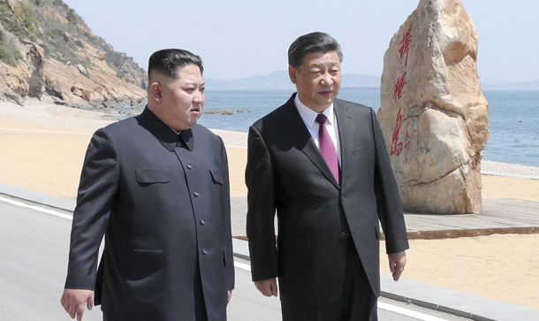

- 문재인 김정은의 만남
- 시진핑 김정은의 만남
- JavaScript
시진핑 김정은의 만남
Kim Jong-un meets with Xi Jinping in eastern China

meeting in his office at the Blue House on Wednesday. [YONHAP]
North Korean leader Kim Jong-un met with President Xi Jinping of China on a two-day visit to Dalian, China, returning to Pyongyang Tuesday, the Blue House confirmed later in the day.
The presidential office’s confirmation of Kim’s visit to the Chinese easternmost port city came amidst a flurry of reports suggesting Kim made his second visit to China in less than two months and met with his Chinese counterpart to coordinate for the upcoming historic summit meeting between Kim and U.S. President Donald Trump.
링크!